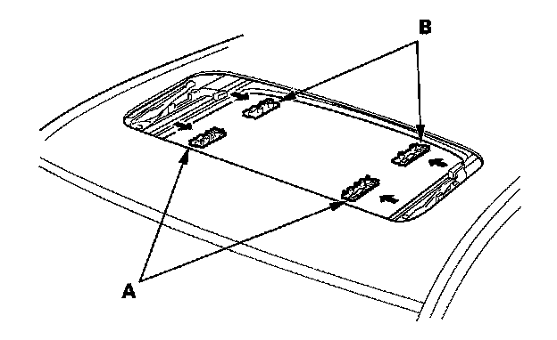

Sun Shade: Service and Repair
Sunshade Replacement1. Remove the drain channel.
2. Slide the sunshade all the way forward.
3. Disconnect both drain channel rods (A) from both glass brackets (B) by pulling the front of them inside, then remove the rods from both drain channel sliders (C) by lifting them up.
4. Slide both drain channel sliders (A) forward until they contact both glass brackets (B).
5. Remove the screws, then remove both sunshade slider spacers (A).
6. While lifting the front portion of the sunshade (A), move the sunshade forward until you can see both sunshade rear hooks (B). Do not damage the sunshade and hooks.
7. Remove the screws, then remove both hooks.
8. Remove the sunshade (A).

9. Remove both front sunshade base sliders (A) and both rear sunshade base sliders (B).
10. Install the sunshade in the reverse order of removal, and check the glass height adjustment.
11. Reset the moonroof control unit.
12. Check for water leaks. Let the water run freely from a hose without a nozzle. Do not use a high-pressure spray.